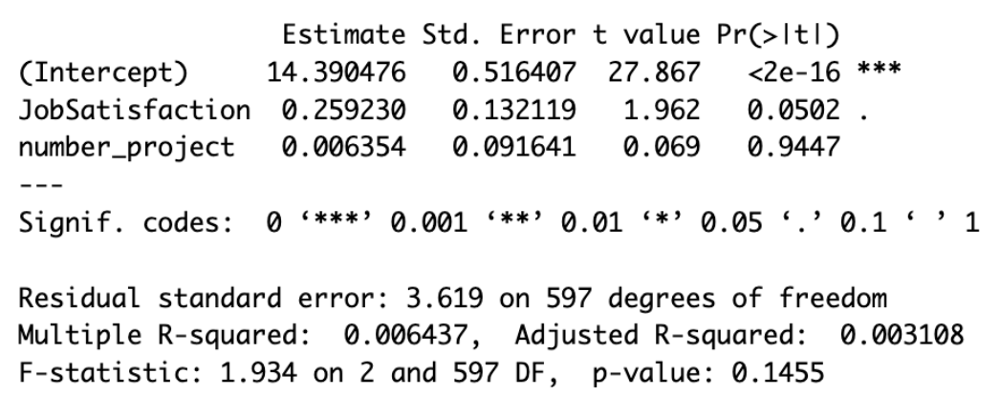
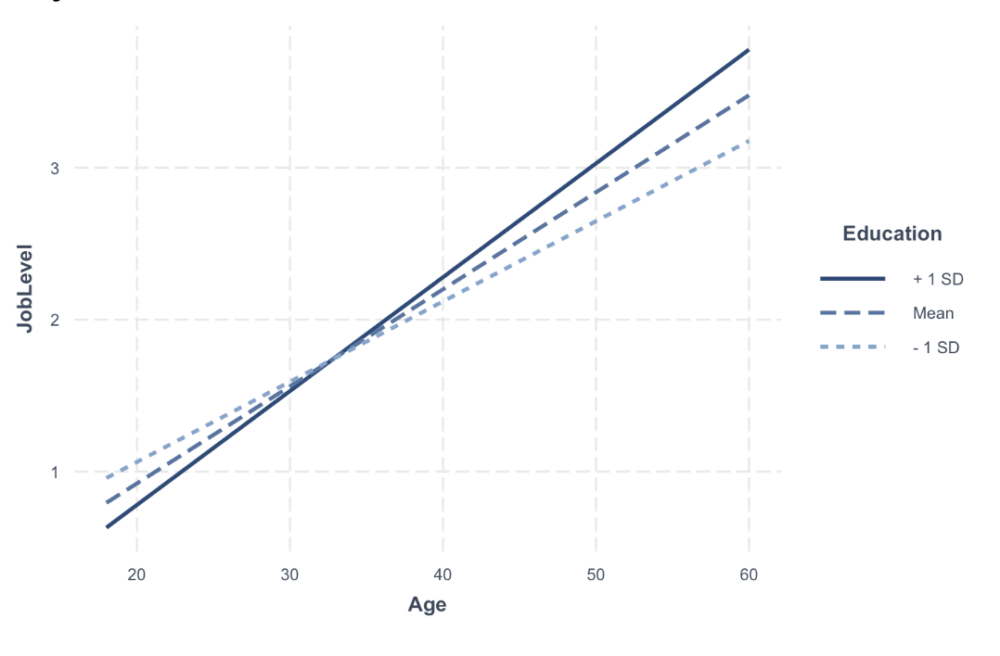

Company Analysis using R
For my industrial-organizational psychology course final project, I used R to analyze company data. Using an ANOVA test, I found that the average daily rate for the researcher & development department was significantly greater than the daily rate of the sales department.
I hypothesized that the relationship between job satisfaction and the percent salary hike was mediated by the number of projects the employee has completed. This hypothesis was not supported, but a regression showed that was a total effect of job satisfaction on percent salary hike, F(1,598) = 3.87, p = .049.
 I tested to see whetehr education moderates the relationship between age and job level and found that age predicts job level for those with high and low levels of education, and the relationship between age and job level is slightly stronger for those with higher levels of education. Download the code: Download Project